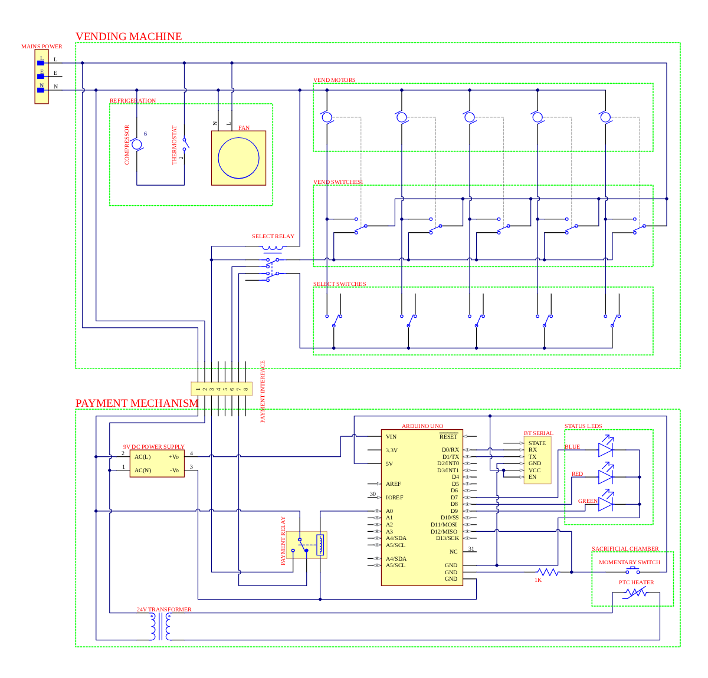

#include
#define DEBUG_BAUD_RATE 9600
//INPUT PINS
#define PAIN_BUTTON_PIN 12
//OUTPUT PINS
#define BLUE_LED_PIN 7
#define RED_LED_PIN 8
#define GREEN_LED_PIN 9
#define PAIN_OUTPUT A0
//TIMING
#define BUTTON_DEBOUNCE_INTERVAL 200 // Milliseconds
int VEND_TIME = 10; //Seconds
int PAIN_TIME = 5; //Seconds
AcksenButton painButton = AcksenButton(PAIN_BUTTON_PIN, ACKSEN_BUTTON_MODE_LONGPRESS, BUTTON_DEBOUNCE_INTERVAL, INPUT);
//STATE MANAGEMENT
enum state { WAITING,
PAIN,
VENDING };
state currentState = WAITING;
String incomingData = ""; // for incoming serial data
void setup() {
Serial.begin(DEBUG_BAUD_RATE);
painButton.setLongPressInterval(PAIN_TIME * 1000); // *1000 to convert s to ms
Serial.println("\n\n\n\n\n\n\n\n\n\n\n\n\n\n\n\n");
Serial.println("Pain Machine V2.0 by Max Davy for Open Sauce 2026");
Serial.println("Available commands:\n\t'pain x' to set pain level 1-10\n\t'vend x' to set vending timeout to x seconds");
pinMode(BLUE_LED_PIN, OUTPUT);
pinMode(RED_LED_PIN, OUTPUT);
pinMode(GREEN_LED_PIN, OUTPUT);
pinMode(PAIN_OUTPUT, OUTPUT);
}
void loop() {
//UPDATE STATE
painButton.refreshStatus();
digitalWrite(BLUE_LED_PIN, LOW);
digitalWrite(RED_LED_PIN, LOW);
digitalWrite(GREEN_LED_PIN, LOW);
digitalWrite(PAIN_OUTPUT, HIGH);
//CHECK FOR SERIAL INPUT
if (Serial.available() > 0) {
// read the incoming byte:
incomingData = Serial.readString();
String command = incomingData.substring(0, incomingData.indexOf(' '));
int value = incomingData.substring(incomingData.indexOf(' ') + 1).toInt();
if (value <= 0) {
Serial.println("status invalid");
} else if (command == "vend") {
VEND_TIME = value;
Serial.print("vend ");
Serial.println(value);
} else if (command == "pain") {
PAIN_TIME = value;
painButton.setLongPressInterval(PAIN_TIME * 1000);
Serial.print("pain ");
Serial.println(value);
} else {
Serial.println("status invalid");
}
}
//HANDLE BUTTON PRESS
switch (currentState) {
case WAITING:
// Vending machine is idle waiting for input
digitalWrite(BLUE_LED_PIN, HIGH);
if (painButton.getButtonState() == true) {
Serial.println("status pain");
currentState = PAIN;
}
break;
case PAIN:
// Vending machine is administering pain
digitalWrite(RED_LED_PIN, HIGH);
if (painButton.getButtonState() == false) {
Serial.println("status incomplete");
currentState = WAITING;
} else if (painButton.onLongPress() == true) {
Serial.println("status vending");
currentState = VENDING;
}
break;
case VENDING:
digitalWrite(GREEN_LED_PIN, HIGH);
// User has selected a product. Vend product and return to idle.
digitalWrite(PAIN_OUTPUT, LOW);
delay(VEND_TIME * 1000);
digitalWrite(PAIN_OUTPUT, HIGH);
Serial.println("status standby");
currentState = WAITING;
break;
default:
Serial.println("status error");
currentState = WAITING;
break;
}
// Delay for one second before running the main loop again
delay(1000);
}
